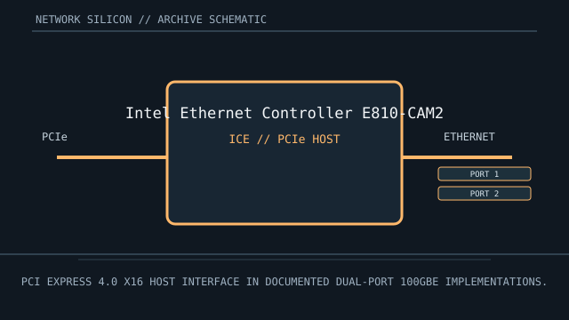

[ MODEL-SPECIFIC NETWORK HARDWARE ]
Intel Ethernet Controller E810-CAM2
E810-series Ethernet controller for dual-port 100GbE adapter and board implementations. This is a controller/chip record; finished-card details are implementation-specific.

IDENTIFICATION: Match complete component top-mark, stepping and board revision. Nominal signaling rates are not measurements of application throughput.
Exact specifications and compatibility
| Dedicated subcategory | Ethernet controllers and PHYs |
|---|---|
| Exact controller identity | Intel Ethernet Controller E810-CAM2 |
| Component / board identity | PCIe Ethernet controller silicon; final host card determines optical/electrical media and connector implementation. |
| PCIe bus and host interface | PCI Express 4.0 x16 host interface, with backward-compatible Gen3 operation on suitable platforms. |
| Ethernet ports / physical interface | Two 100GbE-class ports through board-level high-speed SerDes and supported transceiver/cable interfaces; connector and optics are adapter-specific. |
| Nominal rate (not measured) | Up to 100 Gb/s nominal per port in the documented CAM2 configuration; aggregate line rate is not application throughput. |
| Drivers and OS compatibility | Linux ice driver; Intel and OEM provide drivers/firmware for selected E810 adapter SKUs and supported Windows Server releases. Require a matching NVM package, adapter subsystem ID and OS support matrix. |
| Board / system compatibility | Not a standalone removable NIC. Use only on a validated E810-CAM2 board with PCIe Gen4 lane routing, adequate power/cooling, matching NVM and the board vendor’s supported optics/cables. |
| Revision and variant warning | CAM2 identifies a dual-port E810 controller configuration. Do not infer that every E810 family controller, card, or firmware image shares its port count, media or feature set. |
| Measured throughput | No measured benchmark is claimed for a physical specimen. A valid result records the host, link partner, medium, driver/firmware, traffic pattern, test tool and duration. |
Identification and revision notes
CAM2 identifies a dual-port E810 controller configuration. Do not infer that every E810 family controller, card, or firmware image shares its port count, media or feature set.
Linux ice driver; Intel and OEM provide drivers/firmware for selected E810 adapter SKUs and supported Windows Server releases. Require a matching NVM package, adapter subsystem ID and OS support matrix.
Not a standalone removable NIC. Use only on a validated E810-CAM2 board with PCIe Gen4 lane routing, adequate power/cooling, matching NVM and the board vendor’s supported optics/cables.
Archival and preservation notes
Capture controller top marking, adapter assembly and subsystem IDs, NVM version, transceiver EEPROM data and board thermal configuration. Avoid handling optical modules by their fiber ends.
For an installed specimen, preserve source URL, access date, source revision and label/condition notes. Do not infer connector count or board-level compatibility from controller family name alone.
Manufacturer and driver sources
- Intel Ethernet E810 controller familyIntel E810 controller-family documentation; CAM2 is the dual-port 100GbE variant.
- Intel Ethernet Controller E810 datasheetPrimary datasheet for E810 controller functionality, host interface and port configurations.
- Linux kernel ice driver documentationLinux ice driver coverage, supported Intel Ethernet devices and setup notes.
Sources cover the named controller family and its relevant driver ecosystem. The exact board vendor’s compatibility list takes precedence for a finished adapter or motherboard implementation.